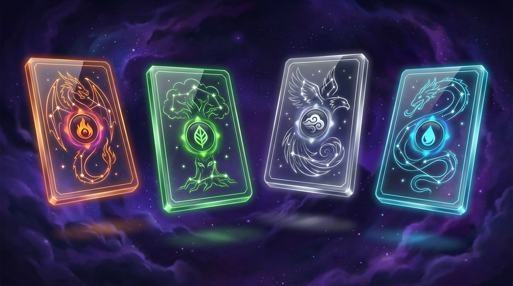
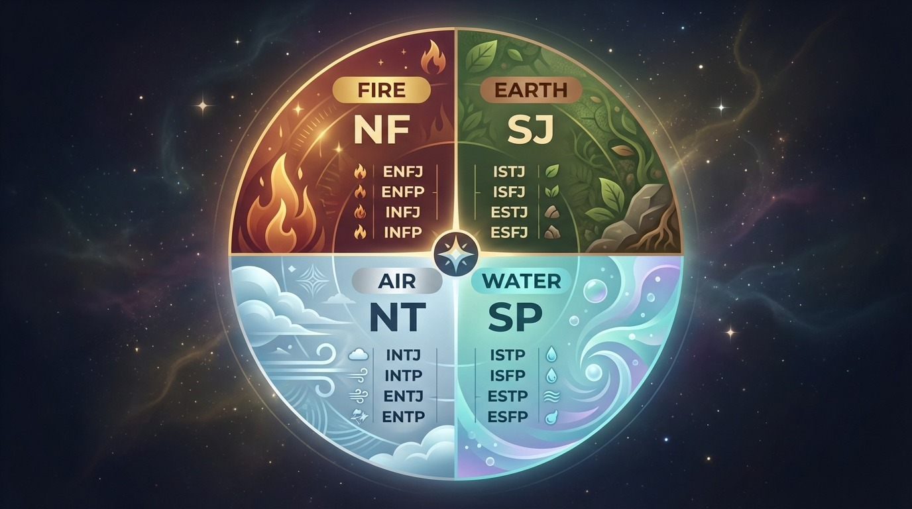

Career Decision Framework by Zodiac Style
Key takeaway: Combine the four elements and three modalities (cardinal, fixed, mutable) to build a simple decision framework for careers.
Note: This content is for entertainment only and not professional advice.
- 1. Why Career Decisions Feel Hard
- 2. Work Style by Element
- 3. Decision Style by Modality
- 4. Example Combinations
- 5. Decision Checklist

1. Why Career Decisions Feel Hard
Career choices often fail because we pick an answer without understanding our decision rhythm. The element and modality system gives you a language for how you actually decide.
This isn’t about fate. It’s about choosing a process that fits how you work best.

2. Work Style by Element
Fire: Speed and challenge
Fire thrives on action. Small tests and rapid feedback work best.
Earth: Stability and accumulation
Earth prefers realistic timelines and steady progress.
Air: Information and connection
Air compares options and builds structure through conversation.
Water: Emotion and meaning
Water decides by resonance and long-term emotional fit.

3. Decision Style by Modality
Cardinal: Starter
Great at launches and direction-setting, but needs clear goals to avoid burnout.
Fixed: Sustainer
Holds steady and builds depth, but can resist necessary change.
Mutable: Adapter
Flexible and responsive, but needs firm priorities to avoid drift.
4. Example Combinations
Fire + Cardinal: Start fast, validate quickly, move on if it fails.
Earth + Fixed: Deepen the current path rather than jumping often.
Air + Mutable: Explore options, then lock the top one for a short sprint.
Water + Cardinal: Commit when the meaning is clear and strong.
Tip: Use this as a language for your rhythm, not a rulebook.
5. Decision Checklist
1) Am I a starter, sustainer, or adapter?
2) Do I choose by speed, stability, information, or meaning?
3) What is the smallest experiment I can try in 3 months?
4) When will I pause or stop if it doesn’t fit?
5) What pattern keeps derailing me?